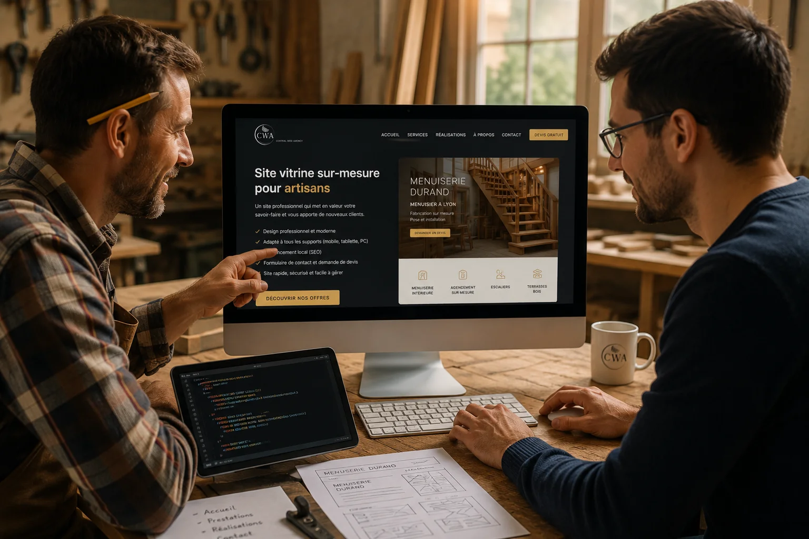

Plombier, électricien, menuisier, peintre, carreleur… Si vous exercez un métier artisanal à Lyon ou dans les environs, vous avez probablement déjà entendu qu'il vous faudrait un site internet. Mais est-ce vraiment indispensable quand le bouche à oreille fonctionne ? La réponse courte : oui, et voici pourquoi.
La réalité de la recherche de client aujourd'hui
Quand quelqu'un cherche un plombier à Lyon un dimanche soir parce que sa chaudière lâche, il ne demande pas à ses voisins. Il sort son téléphone et tape "plombier urgence Lyon" ou "chauffagiste Vienne" sur Google. Les premiers résultats récoltent l'appel. Les autres n'existent pas.
En 2026, plus de 80% des particuliers cherchent un artisan local en ligne avant de le contacter. Pas sur les Pages Jaunes, pas via un annuaire papier — sur Google. Et si vous n'y êtes pas, votre concurrent qui a un site, lui, y est.
Le bouche à oreille ne suffit plus et voici pourquoi
Le bouche à oreille est précieux. Un client satisfait qui recommande votre travail, ça ne se remplace pas. Mais il a une limite fondamentale : il ne fonctionne que dans votre cercle existant. Il ne touche pas les nouveaux arrivants dans le quartier, les personnes qui viennent de déménager à Lyon ou à Bourgoin-Jallieu, les gens qui n'ont tout simplement personne à qui demander.
Un site vitrine, lui, travaille pour vous 24h/24, 7j/7, même quand vous êtes sur un chantier, même le week-end, même pendant vos vacances. Un client potentiel tombe sur votre site à 23h, il voit vos réalisations, lit vos avis, comprend vos tarifs et vous contacte le lendemain matin. Sans que vous ayez rien fait.
Les réseaux sociaux ne remplacent pas un site
Beaucoup d'artisans pensent que leur page Instagram ou Facebook suffit. C'est mieux que rien, mais c'est loin d'être suffisant pour trois raisons.
Premièrement, vous ne possédez pas votre page. Si Instagram change ses règles ou ferme demain, vous perdez tout votre contenu et votre audience du jour au lendemain. Votre site, lui, vous appartient.
Deuxièmement, Google n'indexe pas les réseaux sociaux de la même façon. Une page Instagram n'apparaît pas quand quelqu'un cherche "électricien Lyon 7". Un site vitrine bien optimisé, si.
Troisièmement, un réseau social n'inspire pas la même confiance professionnelle qu'un site dédié avec vos coordonnées claires, vos certifications, vos réalisations et un formulaire de contact.
Vos concurrents qui ont un site reçoivent des demandes que vous ne verrez jamais. Pas parce qu'ils sont meilleurs, mais parce qu'ils sont visibles.
Ce qu'un site vitrine apporte concrètement à un artisan
- Des demandes qualifiées — les gens qui vous contactent via votre site ont déjà vu vos réalisations, vos tarifs approximatifs et votre zone d'intervention. Moins de temps perdu en devis inutiles.
- Une crédibilité immédiate — face à un concurrent sans site, vous gagnez automatiquement la confiance du client. Un site professionnel, ça rassure.
- Une visibilité locale sur Google — avec un site bien référencé, vous apparaissez quand quelqu'un cherche votre métier dans votre ville ou votre quartier.
- Vos horaires et coordonnées toujours accessibles — plus de clients qui ne savent pas comment vous joindre ou qui appellent au mauvais numéro.
- La valorisation de votre travail — un beau portfolio de vos réalisations vaut mieux que n'importe quel discours commercial.
Quel type de site vitrine pour un artisan ?
Pas besoin d'un site complexe. Pour un artisan à Lyon, un site vitrine efficace comprend généralement :
- Une page d'accueil claire avec votre activité et votre zone géographique
- Une présentation de vos services avec les tarifs indicatifs
- Un portfolio ou galerie photo de vos réalisations
- Vos certifications et labels (RGE, Qualibat, etc.) si vous en avez
- Vos avis clients (Google, Pages Jaunes)
- Un formulaire de contact ou un bouton d'appel direct
C'est tout. Pas de boutique en ligne, pas de système de réservation complexe, pas de blog — juste un site propre, rapide, visible sur mobile et bien positionné sur Google pour votre métier dans votre secteur.
Combien ça coûte pour un artisan à Lyon ?
Un site vitrine sérieux pour un artisan lyonnais démarre à 450€ TTC en paiement unique selon le nombre de pages et le niveau de personnalisation. TVA non applicable, art. 293B du CGI. Si vous préférez ne pas investir cette somme d'un coup, nous proposons également des formules à partir de 39€ par mois avec création, hébergement et maintenance inclus.
Pour remettre ça en perspective : si votre site vous ramène un seul chantier supplémentaire dans l'année — et c'est très en dessous de la réalité pour un site bien référencé — il est déjà rentabilisé plusieurs fois.